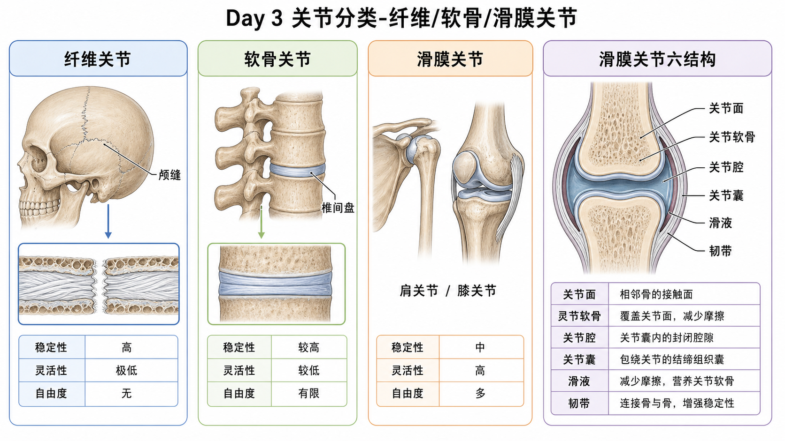

关节不是都一样。纤维关节像缝死的门，软骨关节像带缓冲垫的连接，滑膜关节像有润滑油的活动轴。训练里越能动的关节，越需要肌肉和神经控制来补稳定。
两块骨之间怎么连接，决定它能不能动、能动多少、靠什么稳定。连接越硬，稳定越高但活动越少；连接越允许滑动，活动越多但越需要控制。
训练含义你不会要求颅缝做活动度训练，也不会把肩关节练成完全固定。每个关节要按它的设计目标训练：该稳的稳，该动的动。
颅缝是典型纤维关节。两块颅骨之间像缝线一样咬合，功能是保护脑，不是产生运动。
真实例子成人颅缝基本不动；儿童时期颅骨缝隙更有生长空间。训练中不需要“练颅缝活动度”，听起来就离谱。
常见误解❌以为所有骨与骨之间都该能动。✅有些连接天生就是为了稳和保护。
椎间盘、耻骨联合都属于这个思路：不是完全不动，也不是大幅活动，而是允许少量变形和缓冲。
训练含义脊柱每一节活动都很小，但多节叠加就能完成屈伸旋转。硬拉中立脊柱不是让脊柱“锁死”，而是避免负重下过度集中在某几节。
误区❌以为椎间盘像软垫，越压越能练强。✅椎间盘能承受压力，但反复负重屈曲旋转会增加风险。
肩、髋、膝、肘、腕、踝，大部分训练动作涉及的都是滑膜关节。它有独立关节腔和滑液，允许关节面低摩擦运动。
训练含义深蹲是髋、膝、踝多个滑膜关节协同；卧推是肩、肘、腕协同。动作技术本质上就是让这些关节按合适顺序和轨迹工作。
| 结构 | 功能 | 训练关联 |
|---|---|---|
| 关节面 | 两骨接触面 | 决定运动方向和范围 |
| 关节软骨 | 减摩擦、分散压力 | 长期过载会磨损 |
| 关节腔 | 封闭空间 | 维持滑液环境 |
| 关节囊 | 包住关节 | 过紧限制活动，过松影响稳定 |
| 滑液 | 润滑和营养软骨 | 活动能促进润滑 |
| 韧带 | 被动稳定 | 限制异常方向运动 |
肘主要单轴屈伸；腕可屈伸和左右偏，接近双轴；肩和髋能屈伸、外展内收、旋转，属于三轴。
训练含义固定器械常把动作限制在单一轨迹，容易上手但不一定覆盖真实运动。自由重量和功能动作常需要多个自由度共同控制。
肩关节浅、活动大，所以容易脱位和夹挤；髋关节窝深、稳定强，所以承重更好但活动天花板更明显。
训练含义肩要重视肩袖和肩胛控制，髋要重视活动度和强力输出，膝要重视对线和避免扭转。
常见训练观察：踝和髋需要活动度，膝需要稳定；胸椎需要活动度，腰椎需要稳定。不是绝对规则，但很好用。
真实例子深蹲时踝背屈不够，膝可能内扣或脚外八代偿；胸椎伸展不够，肩推可能腰椎过伸代偿。
❌ 关节越灵活越好。✅ 灵活必须配稳定，否则只是更大范围的失控。
❌ 韧带能主动发力保护关节。✅ 韧带主要是被动限制，主动稳定靠肌肉和神经。
❌ 疼痛关节就一定要多活动。✅ 要先判断是该动、该稳，还是该减负荷。
1. 肩关节属于哪类?
2. 椎间盘连接主要属于?
3. 多选: 滑膜关节六结构包括哪些?
4. 案例: 学员肩很灵活，但卧推肩前侧总不稳。训练思路?